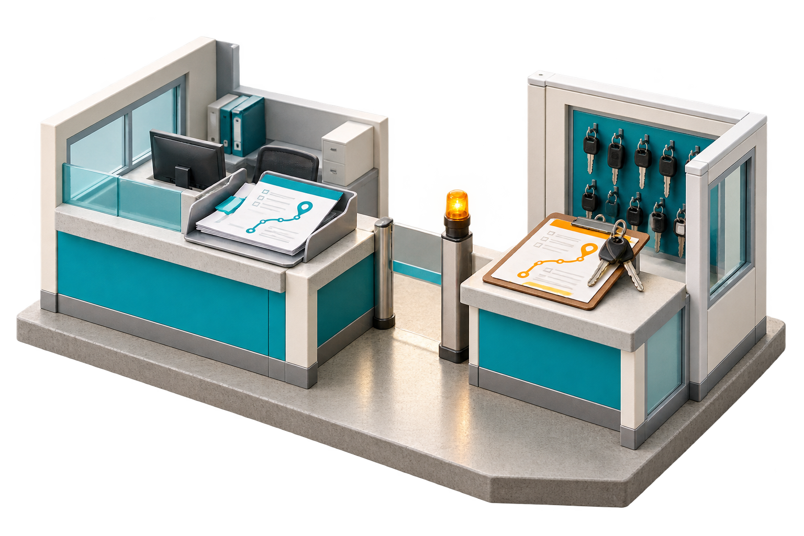

5
A new plan only workswhen someone acts on it.
The revised pickup is sent.The transporter still has the old instruction.
ART checks acknowledgmentand follows the required action through.

Revised pickup2 PM
Still with transporter4 PM
The revised pickup is sent.The transporter still has the old instruction.
ART checks acknowledgmentand follows the required action through.
